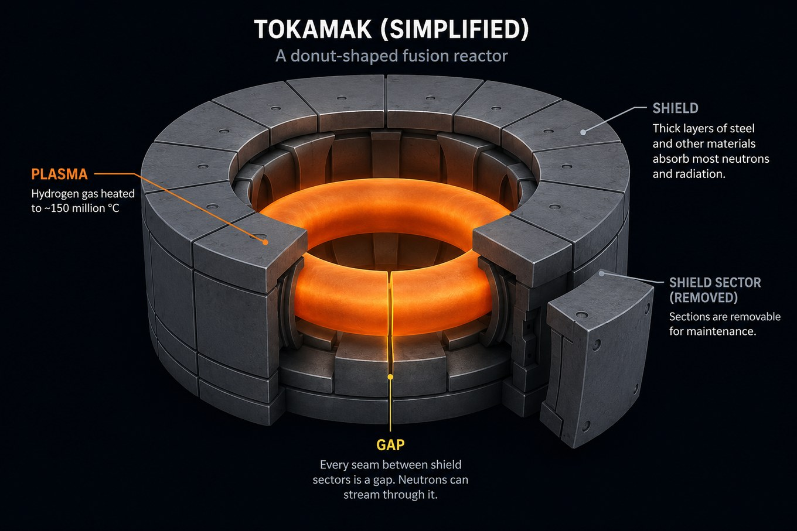
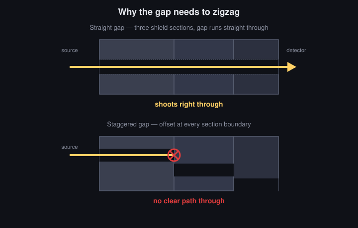

First, some basics
What's radiation, in this context? Not the glowing-green-goo kind from movies. Fusion reactors work by smashing hydrogen atoms together so hard they fuse — the same reaction that powers the sun — and that reaction throws off fast-moving neutrons. Those neutrons are the "radiation" here: they punch through things, heat them up, and over time make materials brittle or radioactive. You don't want them hitting people or delicate equipment.
What's a tokamak? It's the leading design for a fusion power plant — a donut-shaped chamber that holds a ring of plasma (hydrogen gas heated to about 150 million °C) using magnetic fields, because nothing solid could touch something that hot and survive. STARFIRE, the design this study is based on, was a 1980s conceptual power-plant blueprint — never built, but detailed enough to do real engineering calculations against.
What's a radiation shield, and why does it have gaps? Wrap the plasma ring in a thick jacket of steel and other materials, and most of those neutrons get absorbed before they reach anything they'd damage. But the shield can't be one seamless piece — it's built in sections, like panels, because it has to be assembled from pieces in the first place, and those pieces have to come back out again for maintenance. Every seam between panels is a small gap. And a gap is a problem: neutrons stream through it far more easily than through solid shielding, like a draft slipping under a door. Wherever there's a gap, there's a hot spot of leakage behind it.

The fix, and the question
The standard fix is simple: don't leave the gap running straight through. Stagger it — offset each layer slightly from the one before, like the joints in a brick wall, so there's no straight line all the way through. A neutron trying to stream through the gap now has to turn a corner, and turning a corner usually means hitting something solid.

The obvious question a shield designer needs answered: how much does staggering the gap actually help? Back in 1984, using the computers of the era, I ran the calculation that answered that for the STARFIRE design.
Why redo it in 2026
The 1984 calculation had a real limitation: the amounts of radiation that leak through even a well-staggered gap, or through the solid shield itself, are tiny — many decades below the source strength. Tiny enough that the computers of the time couldn't pin the number down; it was lost in statistical noise, like trying to hear a whisper in a noisy room. That gap in the data was never fully closed.
In 2026 I redid the whole study using OpenMC, a modern open-source nuclear physics code, with far better nuclear data than existed in 1984 — the same tools working reactor physicists use today. And I added a technique called weight-window variance reduction, which is essentially a smarter way of aiming the simulation's computational effort at the rare events that matter, instead of spending it uniformly on billions of neutrons that never make it through. That let me finally calculate those faint, previously-unmeasurable numbers cleanly — for the first time, as far as I know, for this specific design.
The upshot
A calculation that was at the ragged edge of what was possible in 1984 now runs on a free tier of Google Colab, using OpenMC — free software on free hardware — and the whole thing, code, data, and write-up, is public, so anyone can check it or build on it.
- See the code and data: github.com/alanhalle/openmc-starfire
- Citable archive (Zenodo): doi.org/10.5281/zenodo.20788782
- Paper: submitted to Fusion Science and Technology, 2026. Read the submitted manuscript (PDF).